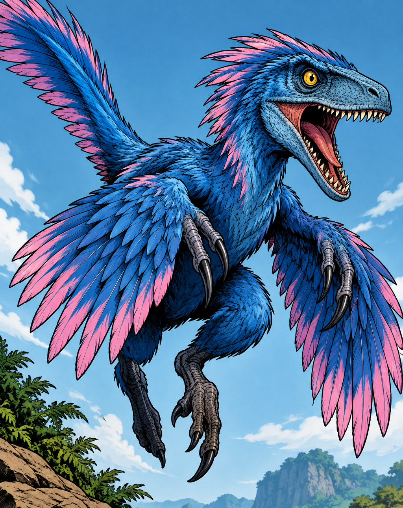
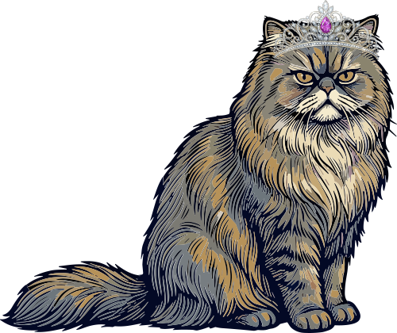

L2-L3 · Princess Donut's Royal Steed

Aquired during the second level of her dungeon crawl from a Pet Reward Room, Mongo is Princess Donut's pet mongoliensis. This blue and pink velociraptor appearing critter his hot-headed and always ready to chomp, although is nose-chomping days are behind him since he bonded with Donut. She affectionately calls him her child, and is fiercely protective of him.
“Mongo is appalled.”
-Princess Donut*, Carl's Doomsday Scenario
Princess Donut can often be seen sitting astride him on a magical saddle, which increases Mongo's damage when she is in place. After receipt of this saddle Mongo was upgraded from Royal Companion to Royal Steed. Together they make a fearsome and blood-thirsty team.
While Mongo rarely shows his feelings, when certain unsavory comments or events happen, Donut is quick to express his disgust with said events, usually in the form of her much famed quote, "Mongo is appalled".
As his kind are pack-hunters, Mongo takes his lead from Princess Donut, recognizing her as his pack-superior. When situations arise where he is endangered, or unruly, Princess Donut utilizes a magical pet carrier to contain him and keep him safe and compliant, although she is always quick to release him as soon as circumstances allow.
L4-L5 · Notable Skills and Equipment

Princess Donut's most reliable damage skill is Magic Missiles, a ranged magical attack spell. With the aid of her magical sunglasses, she has the ability to split the attack between targets, duplicate it, or focus it into an extra strong beam. Speaking on her sunglasses, they also give numerous other benefits as well, such as heat vision, as well as making her look incredibly posh. Other notable skills include her bard songs, which, aided by her boom mic accessory that gives the Golden Throat attribute (more commonly known as auto-tune), allows her to cast buffs, heals, and other support spells on her party.
Being that her base class allows her to choose a new class each floor of the dungeon, she has amassed a plethora of skills and spells, as she is able to retain class skills after switching classes, provided she used them enough to level them up. Some of her other notable skills include Love Vampire, which allows her to use her Charisma (her primary stat) to charm others to the point that they would die for her, Cockroach, which allows her to survive an otherwise fatal blow once a day, and Clockwork Triplicate, which she most frequently utilizes on Mongo to create a pair of clockwork Mongos to fight alongside them.
Although she no longer owns it, as it was a fleeting item and was removed from her inventory when it was unequipped, one of the most notable pieces of equipment Princess Donut has possessed is the Enchanted Crown of the Sepsis *****, a tiara with purple gems that increased her intelligence, allowed her attacks to debuff enemies with Sepsis, and also placed her in the royal line of succession for the Blood Sultanate on the ninth floor - making her an actual Princess. Being in the line of succession means she can't move to the tenth floor until all other members of the royal family are deceased. Removing the crown did not remove her from the line of succession, or the tenth floor requirement.